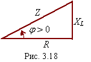

2.3.1.7. Определение угла сдвига фаз φ последовательной RL-цепи посредством треугольника сопротивлений

Второй искомый параметр тока - начальную фазу -Y i = φ определим из треугольника сопротивлений (рис. 2.18), который получен из треугольника напряжений посредством деления всех его сторон (векторов) на вектор тока Im:
(2.38)
т. е. ток i(t) в RL-цепи отстаёт по фазе от приложенного к цепи напряжения u(t) на угол φ.